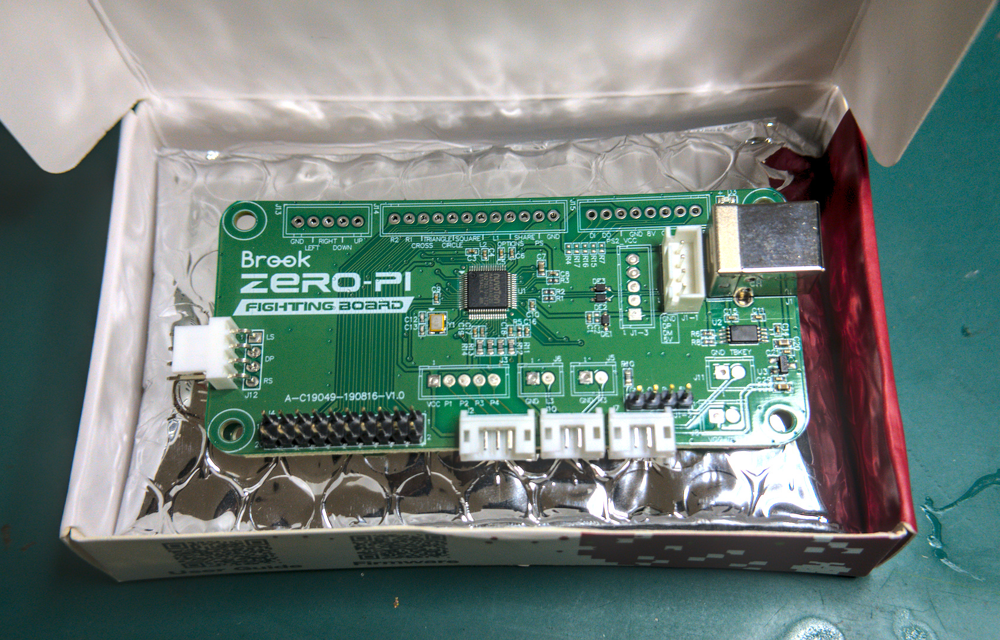

As part of my continuing quest to build a hitbox style arcade stick on as small a budget as possible - while maintaining high quality aesthetics and functionality - I picked up the Brook Zero Pi to interpret the button inputs. Sitting pretty at ~$58 AUD, it has almost all the functionality of its older brother, the Brook PS4 Plus ($87AUD). It misses just 3 things, audio I/O (which is almost entirely useless for a PC player), a neutrik port and gasket (which you can pick up at rs-online for about $12) and screw in terminals. Now, normally, without screw in terminals, you'd have to buy the Brook Harness cables, for nearly $40, rather than wire the buttons yourself for about sweet FA. However, you can just buy the relevant screw in terminals - 2.54mm terminals, and solder them in yourself, in the included ports.
